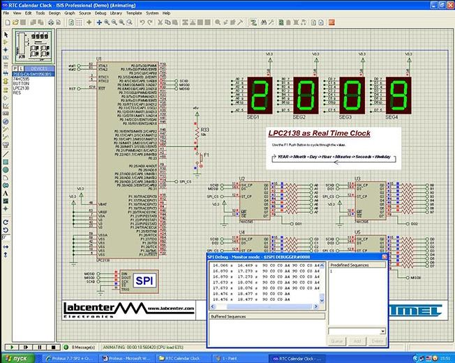
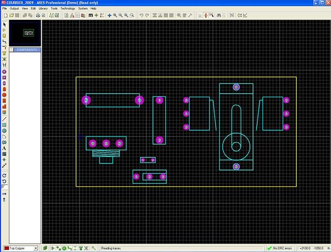
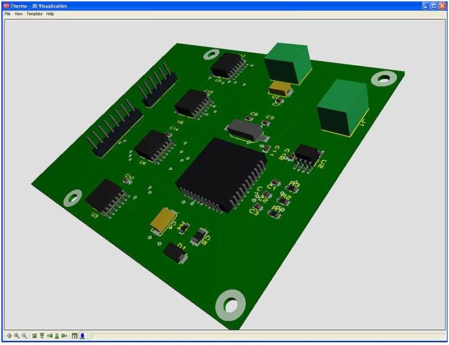
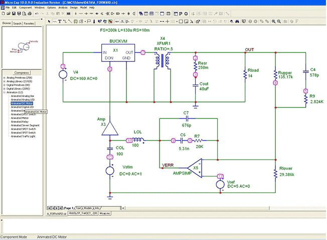
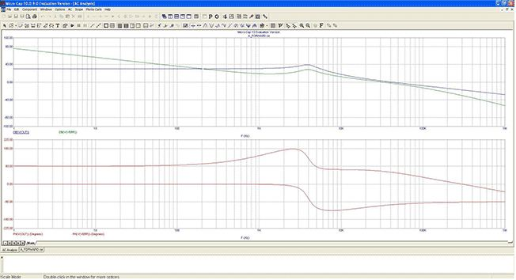
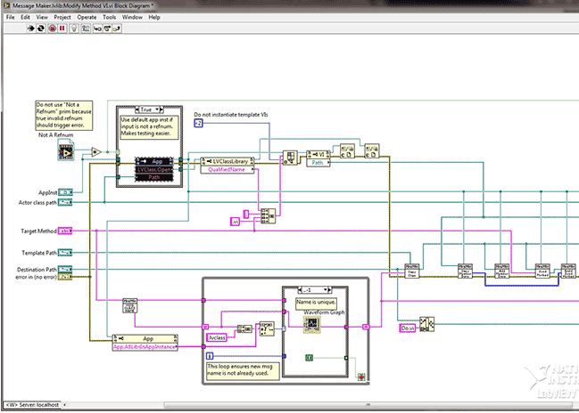
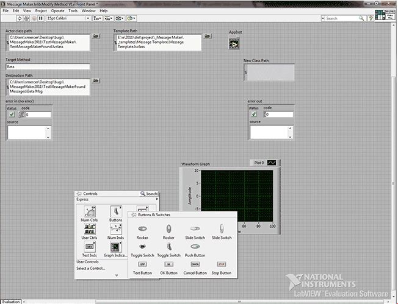

CAD-программы
Proteus
Мощнейшая система автоматизированного проектирования, позволяющая виртуально смоделировать работу огромного количества аналоговых и цифровых устройств.
Программный пакет Proteus VSM позволяет собрать схему любого электронного устройства и симулировать его работу, выявляя ошибки, допущенные на стадии проектирования и трассировки. Программа состоит из двух модулей. ISIS – редактор электронных схем с последующей имитацией их работы. ARES – редактор печатных плат, оснащенный автотрассировщиком Electra, встроенным редактором библиотек и автоматической системой размещения компонентов на плате. Кроме этого ARES может создать трехмерную модель печатной платы.

Proteus VSM включает в себя более 6000 электронных компонентов со всеми справочными данными, а также демонстрационные ознакомительные проекты. Программа имеет инструменты USBCONN и COMPIM, которые позволяют подключить виртуальное устройство к портам USB и COM компьютера. При подсоединении к этим портам любого внешнего прибора виртуальная схема будет работать с ним, как если бы она существовала в реальности. Proteus VSM поддерживает следующие компиляторы: CodeVisionAVR и WinAVR (AVR), ICC (AVR, ARM7, Motorola), HiTECH (8051, PIC Microchip) и Keil (8051, ARM). Существует возможность экспорта моделей электронных компонентов из программы PSpice.

Несмотря на то, что программа работает с устройствами, состоящими из нескольких микроконтроллеров и даже с чипами от разных производителей в одном устройстве, необходимо четко понимать, что симуляция повторяет работу реальной схемы не абсолютно точно! Чтобы избежать ошибок, нужно ясно представлять конечный результат.
Proteus VSM является коммерческим продуктом. Есть бесплатная демонстрационная версия. Она обладает всеми функциями и возможностями платного пакета, но не позволяет сохранить или распечатать результат работы, создать свой собственный микроконтроллер.
Меню программы англоязычное. Полного русификатора для Proteus VSM нет. Устанавливать программу необходимо в папку без кириллических символов в названии.

Micro-Cap
Профессиональная программа аналогового, цифрового и смешанного моделирования и анализа цепей электронных устройств средней степени сложности.
Интуитивно понятный интерфейс, нетребовательность к вычислительным ресурсам персонального компьютера и большой спектр возможностей послужили основой популярности Micro-Cap среди радиолюбителей, студентов и преподавателей микроэлектроники. Алгоритм работы включает в себя создание электрической цепи в графическом редакторе, задание параметров анализа и изучение полученных данных. Программа самостоятельно составляет уравнения цепи и проводит моментальный расчёт. Любое изменение схемы или параметров элементов приводит к автоматическому обновлению результатов. Графический редактор опирается на библиотеки электронных компонентов, которые можно пополнять на основе экспериментальных или справочных данных с помощью встроенного модуля Shape Editor. Все номиналы и параметры элементов могут быть как неизменными, так и зависящими от температуры, времени, частоты, состояния схемы, параметров других компонентов. Анимированные детали (светодиоды, реле, семисегментные индикаторы и некоторые другие элементы) изменяют состояние в соответствии с поступающими на них сигналами. Моделирование включает в себя целый набор различных анализов: переходных процессов, передаточных характеристик по постоянному току, малосигнальных частотных характеристик, чувствительностей по постоянному току, нелинейных искажений, метода Монте-Карло и многих других. Опытные пользователи могут создавать свои макромодели, которые облегчают имитационное моделирование без потерь информации. Допускается одновременно использовать различные стандарты элементов схемы. Полная поддержка SPICE-моделей позволяет применять проекты из других программ (DesignLab, OrCAD, P-CAD). Из недостатков можно отметить лишь необходимость установки дополнительных элементов, так как объем библиотек Micro-Cap (даже в полной версии) явно недостаточен.

Micro-Cap – англоязычный пакет, но желающие могут легко отыскать в сети русификатор программы от известных специалистов по работе с ним – Сергея и Марины Амелиных. У некоторых пользователей после русификации в среде моделирования возникают проблемы с отображением кириллических шрифтов.
Программа была написана в 1982 году фирмой Spectrum Software, с тех пор она постоянно расширяется и совершенствуется. Фирма, в свою очередь, была основана Энди Томпсоном в феврале 1980 года, изначально позиционируясь на написании программ для Apple. Она расположена в одном из основных городов Силиконовой долины – Саннивейле (штат Калифорния, США)

Стоимость Micro-Cap составляет несколько тысяч долларов, однако на сайте разработчика можно скачать свободно распространяемую Evaluation Version, которая обладает многими возможностями полнофункциональной. Основные отличия – это не более 50 элементов в схеме, урезанная библиотека компонентов, ограничения на построение ряда графиков и медленная скорость работы.
NI Multisim
Популярный программный пакет, позволяющий моделировать электронные схемы и разводить печатные платы.
Главная особенность NI Multisim – простой наглядный интерфейс, мощные средства графического анализа результатов моделирования, наличие виртуальных измерительных приборов, копирующих реальные аналоги. Библиотека элементов содержит более 2000 SPICE-моделей компонентов National Semiconductor, Analog Devices, Phillips, NXP и других производителей. Присутствуют электромеханические модели, импульсные источники питания, преобразователи мощности. Инструмент Convergence Assistant автоматически исправляет параметры SPICE, корректируя ошибки моделирования. NI Multisim выпускается в двух вариантах – Professional и Education.
Версия Multisim Education предназначена для учебных заведений и включает в себя обучающие курсы, подготовленные аппаратные решения и рабочие учебники. Основная задача – закрепить теоретический материал, наглядно продемонстрировав работу тех или иных законов и процессов в реальных проектах. Для этого помимо интерактивных компонентов программа способна взаимодействовать с аппаратными платформами NI myDAQ (библиотека контрольно-измерительного оборудования) и NI ELVIS (виртуальный инструментарий для учебной мастерской), что делает возможным создание целых виртуальных лаборатории систем управления, энергетики, мехатроники и силовой техники.

Версия Multisim Professional специально создана для быстрого прототипирования и решения задач оптимизации соединений. Предлагается расширенный пользовательский интерфейс, нестандартные методы анализа, основанные на фирменной системе NI LabVIEW, и обычные алгоритмы имитационного моделирования схем по стандарту SPICE.
Последние версии программы обладают улучшенной функциональностью, новыми инструментами для моделирования, расширенной базой элементов, благодаря чему разработка и создание проектов электрических схем может выполняться гораздо более точно и быстро. NI Multisim может взаимодействовать со средой разработки систем измерения LabVIEW, что позволяет сопоставлять теоретические данные с реальными, прямо в ходе создания схем печатных плат. Это уменьшает количество проектных ошибок и ускоряет реализацию проектов. Обратной стороной этого стали завышенные системные требования, предъявляемые к оборудованию. Нагрузка на процессор и память при работе с большими схемами и при трассировке очень велика.

Первые версии программы имели название Electronics Workbench и разрабатывались одноименной фирмой. В настоящее время Electronics Workbench является дочерней компанией, которая принадлежит National Instruments (http://russia.ni.com/). Штаб-квартира NI расположена в городе Остин (Техас, США), а на странице можно найти контактную информацию об офисах в России.
Для облегчения процесса создания печатных плат компания дает возможность каждому разработчику вступить в онлайн-сообщество NI Circuit Design Community для того, чтобы обмениваться своими работами, прототипами, шаблонами, обсуждать нюансы разработок и получать новые знания от коллег и единомышленников, живущих по всему миру.

Electronics Workbench
Один из самых известных пакетов схематического моделирования цифровых, аналоговых и аналогово-цифровых электронных схем высокой сложности.
Данная система схемотехнического моделирования показала достаточно высокую гибкость и точность вычислений, найдя широкое применение более чем в 50 странах мира, как на предприятиях, так и в высших учебных заведениях. Electronics Workbench включает инструменты для моделирования, редактирования, анализа и тестирования электрических схем. Программа имеет простой интерфейс и идеально подходит для начального обучения электронике. Библиотеки предлагают огромный набор моделей радиоэлектронных устройств от самых известных иностранных производителей с широким диапазоном значений параметров. Кроме этого, есть возможность создания собственных компонентов. Активные элементы могут быть показаны как идеальными, так и реальными моделями. Всевозможные приборы (мультиметры, осциллографы, вольтметры, амперметры, частотные графопостроители, динамики, светодиоды, лампы накаливания, логические анализаторы, сегментные индикаторы) позволяют делать измерения любых величин, строить графики. Electronics Workbench может провести анализ цепи по постоянному и переменному току, исследовать переходные процессы при любом внешнем воздействии с помощью генераторов сигнала разной формы. Для более детального анализа программный пакет может работать с PSpice и Micro-Cap. Electronics Workbench позволяет экспортировать результаты работ в трассировщики Tango, Orcad, Protel, Eagle и Layo1.

Electronics Workbench была создана в 1989 году. Первые версии состояли из двух независимых частей – для моделирования цифровых и аналоговых устройств. Позже в 1996 году обе части были объединены. В 1997 году была выпущена последняя версия программы. На сегодняшний день разработка и поддержка Electronics Workbench прекращена, последним добавлением является EWB Layout, специализированная на разработке печатных плат и расширяющая возможности Electronics Workbench.
Продукт создала компания National Instruments Electronics Workbench Group (Interactive Image Technologies) – один из первопроходцев компьютерной разработки устройств электроники. Сегодня Electronics Workbench – это дочерняя компания, права на которую полностью принадлежат National Instruments Corporation (www.ni.com). Штаб-квартира Electronics Workbench находится в канадском городе Торонто, офисы размещены более чем в 35 странах мира. Основные идеи, наработки и опыт специалистов компании были продолжены в идейном наследнике – программе NI Multisim.

Меню системы схемотехнического моделирования Electronics Workbench англоязычное.
LabVIEW
Графическая среда для создания программ в системах сбора, анализа, измерения, визуализации и обработки данных, а также для управления и автоматизации технических объектов и технологических процессов.
LabVIEW (Laboratory Virtual Instrumentation Engineering Workbench) имеет уникальный графический интерфейс и программирование, которое существенно отличается от работы на Java или C. Создание приложений представляет собой процесс образования блок-диаграммы из графических образов (иконок), что позволяет сконцентрировать все свое внимание только на работе с потоком данных. Любая программа является виртуальным прибором, имеющим «лицевую панель» (все средства ввода-вывода для управления прибором: переключатели, кнопки, светодиоды, информационные табло, лампочки, графики, текстовые поля и прочее) и «блок-схему» (логика работы программы). Все части программы соединены между собой нитями, по которым совершается передача данных. Каждый виртуальный прибор может включать в себя другие виртуальные приборы. Система, созданная в LabVIEW, намного превосходит любой реально существующий лабораторный инструмент, позволяя самостоятельно определять нужные функции создаваемого аппарата. При необходимости, изменения можно внести всего за пару минут.

Программный пакет поддерживает огромное количество оборудования от различных производителей и включает в себя многочисленные библиотеки компонентов, а также развитые средства связи для удаленного взаимодействия с объектом. LabVIEW обладает собственной математической поддержкой и может интегрировать программы, созданные в среде MATLAB. В сочетании с аппаратными средствами возможно создание систем практически любой сложности для решения абсолютно разных задач. LabVIEW применяется для управления (в том числе и удаленного) различным оборудованием (устройствами сбора данных, датчиками, устройствами наблюдения, двигательными устройствами, роботами), сбора данных, тестирований и измерений, визуализации результатов, моделирования процессов, хранения информации и генерации отчетов. Поскольку LabVIEW еще и настоящий 32-битный компилятор, то он способен создавать библиотеки функций и независимые исполняемые файлы.
LabVIEW была создана для уменьшения времени программирования любых измерительных приборов. Но в дальнейшем сфера применимости программы охватила электротехнику, механику, физику, биологию, психологию, химию, образование и множество других отраслей науки. LabVIEW используют передовые научные центры CERN (Европа), Livermore, Batelle, Lawrence (США), крупнейшие военные и промышленные объекты.
Интерфейс LabVIEW, как и встроенная интерактивная обучающая система, контекстнозависимая помощь и множество примеров по использованию приемов программирования, выполнены на английском, китайском, немецком, но не на русском языках.

Первая версия LabVIEW была написана в 1986 году компанией National Instruments (Техас, США, www.ni.com), продукцию которой покупают более 25 тысяч организации, расположенных в 90 странах мира. Последние десять лет National Instruments входит в число 100 лучших работодателей США.
AutoCAD Electrical
Специализированный продукт, созданный на основе популярной САПР AutoCAD и предназначенный для проектирования электрических систем.

AutoCAD Electrical включает в себя большинство функций программного обеспечения AutoCAD, а кроме того содержит уникальные инструменты для автоматизации процессов создания схем, компоновки чертежей, генерации отчетов и многого другого. Приложение работает как с целыми проектами, так и с отдельными компонентами (двигателями, клеммами, реле и т.д.); проводами, жгутами, кабелями; программируемыми логическими контроллерами. Проекты могут включать в себя принципиальные схемы, схемы автоматизации, чертежи компоновок, схемы соединений, монтажные планы, разнообразные отчеты. Модуль «Диспетчер проектов» координирует совместную работу, позволяя рабочим группам на всех стадиях проекта использовать одну цифровую модель.
Программа поддерживает международные стандарты по оформлению чертежей, включает в себя обширнейшие библиотеки компонентов и условных обозначений, в частности свыше 2000 УГО элементов электрических схем стандартов ГОСТ, IEC, JIS, JIC, GB, AUS. Имеется опция самостоятельной разработки и добавления графических образов. Базы данных каталога содержат более 370 тысяч наименований изделий известных производителей, их компоновочные образы и каталожные данные.

Каждому компоненту в схеме присваивается автоматически уникальное позиционное обозначение. Части компонента с одинаковым обозначением, но размещенные на разных листах, определяются программой как единый объект. Произведенные в одной месте изменения переносятся на все остальные части компонента. Проводам в проекте можно назначать цвет, марку, сечение, номера и функции жил кабелей и т.д. Для соединения цепей, расположенных на разных листах (или частях листа), применяются перекрестные ссылки. ПО AutoCAD Electrical содержит специальные инструменты для работы со схемами, имеющими жгутовые соединения, контакторы и реле, программируемые логические контроллеры. Все данные о клеммах проекта рассматриваются в особом «Редакторе клеммных колодок».
В ходе проектирования ПО AutoCAD Electrical в реальном времени осуществляет контроль над всеми проводимыми операциями и при необходимости выводит сообщения об ошибках. Программа отслеживает УГО для компонентов, дублирование обозначений, недопустимые контакты, «висячие» провода, отсутствие или повтор номера провода, элементы с не назначенными номерами каталога, «дочерние» компоненты с не назначенным «родителем».
По данным отдельных чертежей или всего проекта в целом формируются различные отчеты, например, таблицы соединений, перечни компонентов, проводов и кабелей, таблицы сигналов ПЛК, справки о перекрестных ссылках и т.д. Кроме того имеется возможность «тонкой» настройки пользовательских отчётов, а также их сохранения во внешних файлах форматов ASCII, Microsoft Access и Excel, XML, CSV, PDF. Для получения 3D-модели изделия предусмотрена связь с программой Autodesk Inventor.
Программное обеспечение AutoCAD Electrical является платным, стоимость лицензии составляет около 5000 долларов. Можно скачать бесплатную 30-дневную демонстрационную версию данного софта. Установка программы проходит в автоматическом режиме.

Программа AutoCAD Electrical является продуктом знаменитой компании Autodesk, специализирующейся на поставке программного обеспечения для областей машиностроения и строительства, сферы средств развлечения и информации. Организация была основана в 1982 году, в данный момент ее штаб-квартира расположена в городе Сан-Рафеле (США, штат Калифорния).
Языковые пакеты ПО AutoCAD Electrical включают в себя: русский, английский, немецкий, французский, испанский, итальянский, китайский, корейский, шведский, датский, финский и норвежский наборы. Необходимо отметить, что программа не поддерживает языки интерфейса, отличные от языка операционной системы.
Altium Designer
Система автоматизированного проектирования от разработчиков легендарного P-CAD, предоставляющая широчайшие возможности по созданию электронных устройств. Программа в большей степени рассчитана на профессионалов, чем на радиолюбителей.
Состав программного пакета Altium Designer включает весь необходимый набор инструментов для создания, редактирования и правки работ на основе электрических и программируемых интегральных схем. Редактор схем позволяет работать с проектами любого размера и сложности, преобразовывая их в простейшие подблоки. Цифро-аналоговое моделирование учитывает почти все реальные параметры и предоставляет в распоряжение конструктора огромное количество различных анализов, включая анализы переходных процессов, частотный, шумов, передаточных функций, Фурье, методом Monte-Carlo, с изменением значений температуры. На схемотехническом уровне проверяются и устраняются различные импедансы и перекрестные отражения. Редактор печатных плат программы содержит уникальные средства для автоматического (программы Statistical Placer, Cluster Placer) и интерактивного размещения компонентов. Топологический трассировщик Situs использует полностью настраиваемый алгоритм для решения задач разводки печатных плат с большой плотностью установки элементов. Он может работать по неортогональным направлениям и с самостоятельным выбором слоев. Постоянно обновляемые библиотеки программы хранят более 90 тысяч компонентов. Многие из них имеют модели посадочных мест, IBIS и SPICE-модели, а также 3D-модели. Каждую из них можно создать в программе самостоятельно с минимальными затратами времени путем последовательного ввода сведений о компоненте.

Благодаря поддержке DirectX произошло перераспределение нагрузки между процессором и видеокартой, что значительно ускорило работу с полигонами и многослойными платами. Существует возможность разработки печатной платы в трёхмерном виде с импортом/экспортом данных в механические САПР (SolidEdge, SolidWorks, AutoCAD, ProEngineer). Altium Designer поддерживает практически все существующие форматы выходных файлов: DXF, Gerber, NC Drill, ODB++, VHDL, IPC-D-356 и многие другие. Встроенный мастер импорта проектов преобразовывает библиотеки, схемы и платы из систем OrCAD, PCAD, Allegro PCB, PADs, DxDesigner в работы Altium Designer независимо от кодировки (бинарной или ASCII). Отличительной особенностью среды проектирования является сквозная целостность разработки на разных этапах проектирования. Другими словами изменения, внесённые на любом уровне разработки, будут отражены на всех стадиях проекта.
Программа была создана австралийской компанией Altium, которая в 2008 году сообщила о завершении работ над P-CAD и предложила использовать вместо нее программу Protel, разрабатываемую с 2000 года. В 2006 году Protel был переименован в Altium Designer. Несмотря на то, что центральный офис компании расположен в Сиднее, она имеет филиалы в 22 странах. Интерфейс среды проектирования прост и понятен, любую команду можно выполнить через многие меню и один из вариантов всегда можно найти через "Help". В Интернете присутствует огромное количество книг и методических указаний на русском языке по Altium Designer.
В интернете есть неофициальные русификаторы для Altium Designer, однако как правило на старые версии программы, или с не полным переводом.